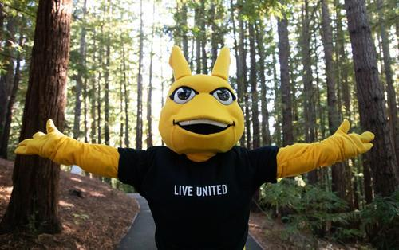
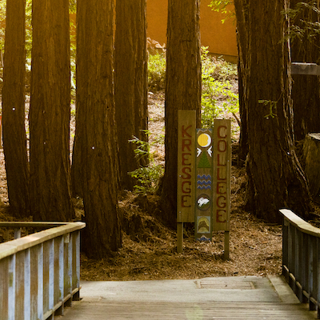

UCSC Treeberg
Welcome to a deep dive to the campus
TIER 1
Take in all the red-colored wood.
Educate thyself: diversity raaaaah
Our beloved living banana-yellow colored, shell-less, terrestrial gastropod mollusks.

Don't know what to tell you. Use those legs and go outside for once. Take a look around; a city's a city.
Wow UC Santa Cruz has a UC-level education! Who woudl've guessed !?


TIER 2
- Cowell (1965)
"The pursuit of truth in the company of friends" - Stevenson (1966)
"Self and society" - Crown (1967)
"Science, Technology, and Society" - Merrill (1968)
"Cultural Identities and Global Consciousness" - Porter (1969)
"Art Longa, Vita Brevia (Life is Short Art Endures)" - Kresge (1971)
"Power and representation"

- Oakes (1972)
"Communicating Diversity for a just Society" - Rachel Carson (1972)
"Environment and Society" - College Nine (2000)
"International and Global Perspectives" - John R. Lewis (2002)
"Social Justice and Community"


Food rotates every day of the week. Some food is good and some completely sucks. It also depends on which dining hall you go to eat at. Compared to other UCs though, our food is mediocre.


Turkey / Deer / Coyote / Raccoons can be found on campus and a lot of times they’re near the roads.


UCSC Coastal Science Campus (CSC) facilities that research and support coastal conservation, marine biology, ecology, habitat restoration, and environmental policy.
Santa Cruz County is known as one of the least afforrdable rental markets in the nation with median rents exceeding $3,000/month.
well...yk what they say... stone's are pretty cool. Especially the green ones, leaf-shaped ones.
These protests impacts the campus' life; affecting instruction, dining serivices, buses, and other resources.
- Pro-Palestine Protests
- Labor Strikes
- Protests Against Protest Restrictions
- Legal Challenges
- Disagreement Over Protests
- University Policies
Students managed to access the laundry machine system's API, leading them to figure out that the app would believe the user's phone, rather than checking the servers. This allowed them to fake deposits without making any actual payments. They also automated logging in, exploiting the OAuth2, and due to how the washing machines worked (having to manually start the machines yourself), there was no real danger to this method. This exploit was actually reported 5 months to Cybersecurity, however, these reports were ignored.
TIER 3
It's not an unsusual sight to see the people that keep UCSC running protesting for their saftey or a pay raise. Support essentail workers and the people that further your education!
UCSC is a diverse school filled with an egregious number of white people. Not as bad as you expect on a day-to-day basis, but it has its lows.
As Chancellor of UC Santa Cruz (UCSC), Cynthia Larive has implemented initiatives to enhance student success and inclusivity. Although, her tenure has also been marked by decisions that have elicited mixed reactions from the student body. Including but not limited to Pro Palestine Protests.
Bad wifi, outages of all sorts, heavy rain, and all the bad weather that is constantly being announced
Everyone hates TAPs, period. Parking on campus requires a permit (which is super, duuuuuper expensive), and the tickets can also be quite pricey to pay off. You can appeal for parking tickets, but the process is atrocious. It’s understandable that they want to discourage unpermitted parking, but the parking situation in Santa Cruz just sucks overall.
About 71 students in CSE 13s with Professor Long were flagged by MOSS (cheating system) for plagiarism. The class started off with 400 students and there were 280 enrolled at the time. The staff made posts for cheaters to come forward and confess on their own for a more lenient punishment, but this was probably because the MOSS system couldn’t actually detect everyone despite how great they made MOSS seem. There were about 200 unique views on a previous student's repository on GitHub, and looking at that code was an unapproved resource highlighted in the course syllabus and under the academic honor policy.
Going to your class in the morning? Or just so sleepy and need a cup of joe in the morning? Be careful, that is when they are the most active. Our beloved turkeys are loud and ready to fight. Keep your distance and be respectful to the animals, they won't hurt you unless you do them.
There are plenty, and we mean, pleeeeeenty of interesting sights to see here at UCSC. Inclucing but not limited to:
- Furries
- the Genshin car (last seen with Kokomi on it)
- Pink Tesla
- Porter Witch Circles
- Disagreement Over Protests
UCSC is a crunchy school, so it isn't surprising when you get a whiff of something sour or see another student barefoot on the public bus; it is all part of the UCSC experience.
Wanna go downtown? Wanna go to Target? It's possible! It only takes an hour or two! So leave earlier if you don't wanna spend money on Uber or Zipcar. The fact that it's free for students is what saves it from being horrible.
Look around, you were, are, or will be one of them. Give them a little grace.
TIER 4
Meaning, Paradox, Love. A class that covers the idea of being happy. (let’s face it, a good number of us should be in this course)
https://www.reddit.com/r/UCSC/comments/11gwptj/cowel_65_meaning_paradox_love/
https://cowell.ucsc.edu/academics/courses/index.php/course/2192-62721/meaning-paradox-love
A CS Professor who left UCSC because the university wasn't respecting his patent, the facultiy's minimal requirements to teach are not being met by the administration, repeated instances of anti-Semitism, and political commentary of the univeristy not reflecting all of the faculty, and apparently commented in the UCSC sub on Reddit a lot.
https://www.reddit.com/r/UCSC/comments/zyt87i/the_other_reason_for_ethan_millers_retirement/
Wanna still have fun while attending UCSC? Especially when you live on campus? Look no further than into the trees!! (the Lorax is calling) Raves happen every so often and if you’re in the mood to go wild into the night, might as well go wild in the wild!!
A party held for the annual celebration of pie day, and no, not that pie silly. Pi(e) day you goof; March 14th? 3.14? Get it? Also… it’s not actually in a cave.
Feeling loney? Ar eyou a guy? UCSC has the group for you !! Every Valentine's day, a group of UCSC incels meet up at the local Denny’s to bask in each others company. They post ads about it before the cherished holiday
One of our local Caves is lovingly referred to as the Hell Hole for how deep it goes. During your time at UCSC you'll probably hear about someone breaking their arm there.

A small sandy beach hidden in a secret cove on a downslope off of some train rails. The Garden of Eden is located in Henry Cowell State Park off Highway 9 and is a nice, chill spot to relax or take a dip in the clear blue water.


A bullet was found in the student's laundry mat, casually just in another student's laundry.
On rainy days, if the conditions are right, students gather at Porter College to run in little to no clothing as a fun and cheeky way for students to have fun.
Hidden beneath the McHenry Library, there is a restricted-access courtyard located on the lowest level, that is not open to the public. It is typically only accessible to the staff. It isn’t shown on public floor plans and the courtyard has become a part of campus lore.
https://www.reddit.com/r/UCSC/comments/cwr5d3/does_anyone_know_how_to_get_to_the_forbidden/
An individual either getting pranked by a short person, with a cone on their head…or getting pranked by a real life gnome. We wouldn’t consider either of those to be good…\
https://www.reddit.com/r/UCSC/comments/1d7bmct/strange_occurrences_at_the_trailer_park/
TIER 5
Around the early 2000s, a group of students allegedly from Porter or Kresge managed to steal a shuttle bus and drove the bus off-campus as a prank. But what they did was still take the normal bus route and transport students. Eventually, authorities realized what was happening and the students later ditched the bus.
>Engineering Principles of Electronics (ECE30), seems to be quite the traumatizing experience for the students that have taken this course. Those of you that plan to take it, you have been warned…
https://www.reddit.com/r/UCSC/comments/17vhhol/workload_with_ece_30/
The death of a rare matured Hikari Ogon Japanese Koi Fish, leading to the school's "revoked recognition" of the Delta Omega Chi fraternity.
https://news.ucsc.edu/2003/06/uc-santa-cruz-revokes-fraternitys-recognition-over-fish-incident/
A birdman in the late 80s and early 90s that became friendly (tamed) lots and lots of birdies!
https://www.reddit.com/r/UCSC/comments/1g8i9iy/ucsc_iceberg_first_draft_lol/
UCSC is considered a hotspot for Bigfoot activity. Keep an eye out for any big-footed creatures out there! Who knows, you might also run into traces of its cryptid cousin, the Largehand dun dun dunnnn.
https://www.youtube.com/watch?v=ikNxQ--NJE8
https://cityonahillpress.com/2022/03/14/through-our-pens-a-guide-to-ucsc-cryptids/
There's word on the street that Tarantino was dating a girl at UCSC while writing, "Reservoir Dogs" and spent a large amount of this writing time at the Asti. He also deliberately wore the Banana Slugs shirt in his film, "Pulp Fiction". Can we just appreciate his rep?
20 year old UCSC student arrested for homicide after strangulating his 21 year old girlfriend at SeaBright Beach.
TIER 6
Rocket Team Fraud NOT DONE
Born in 1948, he murdered 6 female college students, his mother, and her friend. His mother’s job at UCSC gave him access to university parking stickers so he could impersonate UCSC co-eds. Also when he was 15, he murdered his grandparents.
https://en.wikipedia.org/wiki/Edmund_Kemper

On February 10th, 1999, UCSC student who was a resident at Porter, wrapped himself with an American flag, walked up to a 4th floor balcony, shot himself, and fell off the balcony and landed on the quad. There are also paranormal sightings of a ghost named Lily often seen around the meadow area and strange sensations at Porter Building B (“Bermuda Triangle” Rooms)
https://www.reddit.com/r/UCSC/comments/2tdj5u/ucsc_ghost_stories/
Before the construction of JRL, 10, and even 9/10, ELFLAND was what took place on that specific plot of soil. Early students built huts in a large grove of redwood trees. Said students were inspired by the series, The Hobbit, as well as other works in the science fiction genre.
https://www.reddit.com/r/UCSC/comments/18yelyn/who_knows_about_elfland/
In 1994, a teenage girl’s body was discovered in Pogonip Park near the UCSC campus, and the case was left unsolved for almost two decades until later DNA analysis identified the body as Kori Joann Lamaster. This story morphed into the legend that her remains were never fully recovered and that some skeletal parts still remain at Pogonip.
https://www.reddit.com/r/UCSC/comments/1g8i9iy/ucsc_iceberg_first_draft_lol
Sarah Cowell, the youngest daughter of Henry Cowell, died on May 14th, 1903 horseback riding in an area that is known as the Haunted Meadows. The legend goes that her spirit lingers in the area she died and her apparition is said to appear near the Barn Theatre at Cowell College.
https://history.santacruzpl.org/omeka/items/show/90314#?c=0&m=0&s=0&cv=0
A Film Professor accidentally exposed a rather…inappropriate photo of himself on the first day of the course, while trying to show a movie clip for said film class.
https://www.reddit.com/r/UCSC/comments/1h3p4v6/an_updated_ucsc_iceberg/
TIER 7
In 2006, UC Santa Cruz Chancellor Denice Denton tragically passed away in San Francisco. Denton was a trailblazer in higher education, known for her work in STEM and her commitment to equity and diversity. Her passing was a deeply painful moment for the UCSC community and highlighted the immense pressures faced by academic leaders. She is remembered for her groundbreaking leadership and the barriers she helped break.
- Banana Slugs cooperate in secret with the administration in the Oakes buildings. It is said that “Oakes” is actually a secret headquarters where our secret Banana Slug overlords meet and live. There, they concoct a series of plots and work to maintain control over the entire university. Make sure to spread the word, “Oakes is a Hoax”.
- On the flipside, Oakes College has been said to have faced allegations of racism and discriminatory behavior taking place within its premises.
- October 2, 2001 morning: Anti-Muslim remarks were shouted at a student.
- October 2, 2001 afternoon: report of two anti-Semitic and white supremacist flyers were found on top of picnic tables. Later that evening, a staff member had found a young woman stapling ant-Semitic content that referred to a website containing racist (white supremacist) information.
- October 3, 2001 afternoon: Oakes students found a copy of a racist flyer targeting African-American students at one of the college’s bus stops.
https://www.reddit.com/r/UCSC/comments/usud8t/being_black_at_ucsc_for_prospective_students/
Referring back to the Hell Hole (and an additional smaller cave: Empire Grade), there are people interested in exploring said caves, and students would form groups to climb down towards the pitch black darkness out of curiosity/as a challenge.
https://www.reddit.com/r/santacruz/comments/vgxwxz/caves_at_ucsc_campus/
On Google Maps, there's a place referred to as Cat's Cradle. It is supposedly a cat shrine, or a memorial for a bunch of cats.
https://www.reddit.com/r/UCSC/comments/13dby4w/where_is_the_cat_shrine/
https://www.reddit.com/r/UCSC/comments/9sqyba/secret_places_on_campus/?utm_source=chatgpt.com
In 2019, Collin Riley Howard, an 18-year-old UC Santa Cruz student, was indicted for developing an iPhone app called "Banana Plug" to sell illegal drugs, including cocaine and methamphetamine. The app, disguised as a game and advertised on campus, allowed users to place drug orders and make special requests.
TKE, otherwise known as Tau Kappa Epsilon (a fraternity)...well..I don’t think we have to explain.
TIER 8

https://cityonahillpress.com/2025/02/28/dollars-at-play-ucscs-investment-in-blackrock/